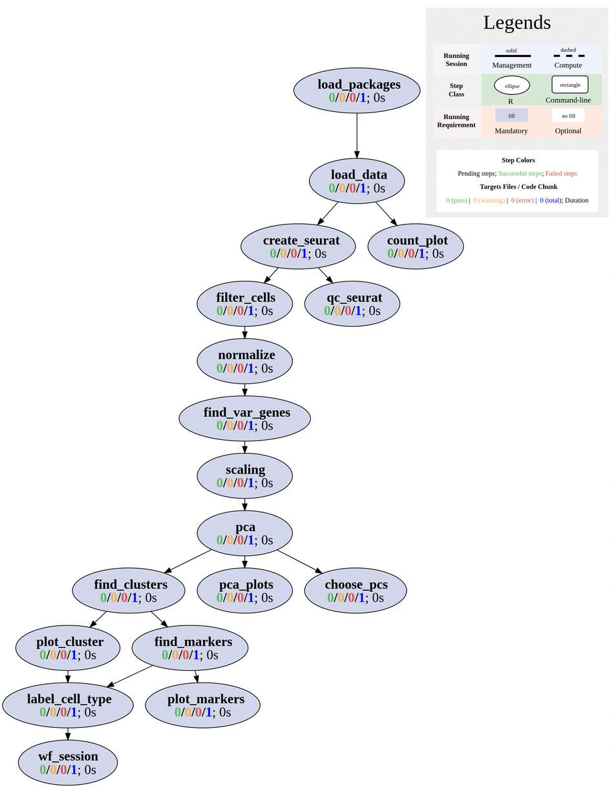

Single Cell RNAseq
Author: FirstName LastName
Last update: 02 October, 2023
Source:vignettes/SPscrnaseq.Rmd
SPscrnaseq.RmdAbout the template
This section provides general description and how to use this single cell RNAseq (scRNAseq) workflow. In the actual analysis report, this section is usually removed.
This scRNAseq workflow template is based on the counted 10x scRNA
data. It means this workflow expect users have output from cell counting
programs, like cell ranger. If you have the raw sequencing data and
would like to count the cell gene counts, please use another workflow in
systemPipeR, such as SPcellranger.
This workflow does:
- Read in single cell count data.
- Basic stats on input data.
- Create some basic QC on cell counting.
- Normalization.
- Find high variable genes.
- Scaling.
- dim reduction, PCA.
- Clustering with tSNE, uMAP.
- Find clustering markers (marker gene).
- Find cell types.
- Visualize cell types and clustering together.
This template is modified from Seurat Tutorial.

Introduction
Users want to provide here background information about the design of their scRNAseq project.
This report describes the analysis of a scRNAseq project studying drug …
Workflow environment
systemPipeR workflows can be designed and built
from start to finish with a single command, importing from an R Markdown
file or stepwise in interactive mode from the R console.
This tutorial will demonstrate how to build the workflow in an
interactive mode, appending each step. The workflow is constructed by
connecting each step via appendStep method. Each
SYSargsList instance contains instructions needed for
processing a set of input files with a specific command-line or R
software and the paths to the corresponding outfiles generated by a
particular tool/step.
To create a Workflow within systemPipeR, we can
start by defining an empty container and checking the directory
structure:
library(systemPipeR)
sal <- SPRproject()
salLoad packages
This is an empty template that contains only one demo step. Refer to our website for how to add more steps. If you prefer a more enriched template, read this page for other pre-configured templates.
cat(crayon::blue$bold("To use this workflow, following R packages are expected:\n"))
cat(c("'Seurat", "ggplot2", "ggpubr", "patchwork", "dplyr", "tibble",
"readr'\n"), sep = "', '")
### pre-end
appendStep(sal) <- LineWise(code = {
library(systemPipeR)
library(Seurat)
library(dplyr)
library(ggplot2)
library(ggpubr)
library(patchwork)
}, step_name = "load_packages")Load data
In this example, the single cell data is preprocessed/filtered 10x data from a healthy donor. Samples taken from peripheral blood mononuclear cells (PBMCs), about 3000 cells.
Dataset can be downloaded with this link: https://s3-us-west-2.amazonaws.com/10x.files/samples/cell/pbmc3k/pbmc3k_filtered_gene_bc_matrices.tar.gz
If the link is not working, visit 10x website for updated links.
For your real data, please preprocess and put the dataset inside
data directory
appendStep(sal) <- LineWise(code = {
# unzip the data
untar("data/pbmc3k_filtered_gene_bc_matrices.tar.gz", exdir = "data")
# load data
pbmc.data <- Read10X(data.dir = "data/filtered_gene_bc_matrices/hg19/")
# Use dim to see the size of dataset, example data has
# 2700 cells x 32738 genes
dim(pbmc.data)
}, step_name = "load_data", dependency = "load_packages")Simple count visulization
We can plot to see how many cells have good expressions.
appendStep(sal) <- LineWise(code = {
at_least_one <- apply(pbmc.data, 2, function(x) sum(x > 0))
count_p1 <- tibble::as_tibble(at_least_one) %>%
ggplot() + geom_histogram(aes(x = value), binwidth = floor(nrow(pbmc.data)/400),
fill = "#6b97c2", color = "white") + theme_pubr(16) +
scale_y_continuous(expand = c(0, 0)) + scale_x_continuous(expand = c(0,
0)) + labs(title = "Distribution of detected genes",
x = "Genes with at least one tag")
count_p2 <- tibble::as_tibble(BiocGenerics::colSums(pbmc.data)) %>%
ggplot() + geom_histogram(aes(x = value), bins = floor(ncol(pbmc.data)/50),
fill = "#6b97c2", color = "white") + theme_pubr(16) +
scale_y_continuous(expand = c(0, 0)) + scale_x_continuous(expand = c(0,
0)) + labs(title = "Expression sum per cell", x = "Sum expression")
png("results/count_plots.png", 1000, 700)
count_p1 + count_p2 + patchwork::plot_annotation(tag_levels = "A")
dev.off()
}, step_name = "count_plot", dependency = "load_data")Create Seurat object
appendStep(sal) <- LineWise(code = {
sce <- CreateSeuratObject(counts = pbmc.data, project = "pbmc3k",
min.cells = 3, min.features = 200)
# calculate mitochondria gene ratio
sce[["percent.mt"]] <- PercentageFeatureSet(sce, pattern = "^MT-")
}, step_name = "create_seurat", dependency = "load_data")Filters applied here are:
-
min.cells = 3: for a single gene, it must be presented in at least 3 cells. -
min.features = 200: for any cell, it must at least have 200 genes with readable gene counts.
In your real data, you may want to adjust the filters for different projects.
QC of cells
Some indicators are important to show the quality of the cell batch, for example
- N genes (features) per cell
- N counts per cell
- Mitochondria (mt) gene ratio.
- …
appendStep(sal) <- LineWise(code = {
png("results/qc1.png", 700, 700)
VlnPlot(sce, features = c("nFeature_RNA", "nCount_RNA", "percent.mt"),
ncol = 3)
dev.off()
qc_p1 <- FeatureScatter(sce, feature1 = "nCount_RNA", feature2 = "percent.mt")
qc_p2 <- FeatureScatter(sce, feature1 = "nCount_RNA", feature2 = "nFeature_RNA")
png("results/qc2.png", 700, 450)
qc_p1 + qc_p2 + patchwork::plot_annotation(tag_levels = "A")
dev.off()
}, step_name = "qc_seurat", dependency = "create_seurat")Extreme numbers, outlines are likely low quality sequencing/bad cells.
As shown on the figure above, A is the ratio of percent mt vs. N count. Normally, no matter how many counts you can find from a cell, the percent mt gene ratio should always be stable. For cells with extremely high mt ratios, they should be removed. Looking at x-axis, for a single cell, the N counts should also be inside a reasonable range. Too low of counts indicates the cell gel bead is empty during barcoding. Too high of counts indicates a single gel bead had more than one cell during barcoding. Either these cases are bad, and cells of these should be removed.
B is N genes per cell vs. N counts per cell. Normally, if as the N counts increases, the N genes also increases. All cells should be connected to approximately one line. If you see more than one line, there may be problem with the sequencing, or cells are not from the same batch.
Normalization
For RNAseq data, usually log transformation and TPM is performed. For scRNA, the normalization is
\[ Normalized\ count\ for\ a\ gene\ in\ a\ cell\ =log1p(\frac{Feature\ counts}{Total\ counts\ in\ a\ cell})\\ where\ log1p\ is\ ln(n+1) \]
appendStep(sal) <- LineWise(code = {
# scale.factor = 10000 is a convenient number for
# plotting, so the normalized counts is ranged between
# 0.xx to 10.
sce <- NormalizeData(sce, normalization.method = "LogNormalize",
scale.factor = 10000)
# compare counts before and after
count_p_norm <- tibble::as_tibble(BiocGenerics::colSums(sce$RNA@data)) %>%
ggplot() + geom_histogram(aes(x = value), bins = floor(ncol(pbmc.data)/50),
fill = "#6b97c2", color = "white") + theme_pubr(16) +
scale_y_continuous(expand = c(0, 0)) + scale_x_continuous(expand = c(0,
0)) + labs(title = "Total expression after normalization",
x = "Sum expression")
png("results/normalize_count_compare.png", 1000, 700)
count_p2 + count_p_norm + patchwork::plot_annotation(tag_levels = "A")
dev.off()
}, step_name = "normalize", dependency = "filter_cells")After the normalization, expression is close to a normal distribution.
Find highly variable genes
Some genes are highly variable among cells. These genes are the key for the research. Here, some top-ranked variable genes are calculated and will be used for downstream analysis.
appendStep(sal) <- LineWise(code = {
# 2000 is default
sce <- FindVariableFeatures(sce, selection.method = "vst",
nfeatures = 2000)
# top 10 variable genes
top10_var <- head(VariableFeatures(sce), 10)
# plot the top 2000 variable genes and mark top 10
png("results/variable_genes.png", 700, 600)
VariableFeaturePlot(sce) %>%
LabelPoints(points = top10_var, repel = TRUE) + theme_pubr(16)
dev.off()
}, step_name = "find_var_genes", dependency = "normalize")Scaling
To make the visualization within a reasonable range, scaling is performed. This changes the expression data points to be centered at 0 with standard deviation of 1.
PCA
appendStep(sal) <- LineWise(code = {
# only use the top 2000 genes, first 50 PCs (default)
sce <- RunPCA(sce, features = VariableFeatures(object = sce),
npcs = 50)
# we can use following command to see first 5 genes in
# each PC
print(sce$pca, dims = 1:5, nfeatures = 5)
}, step_name = "pca", dependency = "scaling")Plot PCA results
appendStep(sal) <- LineWise(code = {
# plot PCA overview
png("results/pca_overview.png", 500, 500)
DimPlot(sce, reduction = "pca")
dev.off()
# plot top contributed genes in PC 1 and 2
png("results/pca_loadings.png", 700, 550)
VizDimLoadings(sce, dims = 1:2, reduction = "pca")
dev.off()
# we can also use heatmap to show top genes in
# different PCs
png("results/pca_heatmap.png", 700, 700)
DimHeatmap(sce, dims = 1:6, cells = ncol(sce)/5, balanced = TRUE,
slot = "scale.data")
dev.off()
}, step_name = "pca_plots", dependency = "pca")

Find optimal PCs
After PCA, the dimension has reduced from tens of thousands (features) to 50. Before, we do the clustering, we can further reduced the PCs to only a few important ones, so the computation work can be easier. How to choose the best number of PCs is hard to decide. Here, the JackStraw plot and Elbow plot can be good ways to help us make the decision.
appendStep(sal) <- LineWise(code = {
# for demo purposes, only a few replicates are used to
# speed up the calculation in your real data, use
# larger number like 100, etc.
sce <- JackStraw(sce, num.replicate = 30)
sce <- ScoreJackStraw(sce, dims = 1:20)
png("results/jackstraw.png", 660, 750)
JackStrawPlot(sce, dims = 1:20)
dev.off()
png("results/elbow.png", 500, 500)
ElbowPlot(sce)
dev.off()
}, step_name = "choose_pcs", dependency = "pca")There is a gap of values between PCs 1-6 and other PCs. Therefore PCs 1-6 are the most important. One could also include PCs 7-13 since they have \(p\leq0.05\). One would need to adjust the PC choice based on different datasets.

The Elbow plot also shows there is turning point around PC 7-8. All other following PCs did not change too much.
It seems we should choose PC 6 or 7 as the cutoff point based on plots above. However, Seurat documents recommend to combine methods above with GSEA. Some cell populations may relate to genes in later PCs, e.g. dendritic cell and NK aficionados are linked to PCs 12, 13. Therefore, if your computational resources allow, it would be good to include a few more PCs.
The Seurat documents recommend to repeat with 10, 15 or PCs. However, in our experiences, the results did not change significantly.
In the downstream analysis, this template choose 10 PCs.
Clustering
Seurat uses graph-based methods like KNN to find the clusters.
appendStep(sal) <- LineWise(code = {
sce <- FindNeighbors(sce, dims = 1:10)
# resolution 0.4-1.2 good for 3000 cells, if you have
# more cells, increase the number will give you more
# clusters
sce <- FindClusters(sce, resolution = 0.5)
}, step_name = "find_clusters", dependency = "pca")Visualize clusters with UMAP/tSNE
appendStep(sal) <- LineWise(code = {
sce <- RunUMAP(sce, dims = 1:20)
png("results/")
p_umap <- DimPlot(sce, reduction = "umap", label = TRUE)
sce <- RunTSNE(sce, dims = 1:20)
p_tsne <- DimPlot(sce, reduction = "tsne", label = TRUE)
png("results/plot_clusters.png", 1000, 570)
p_umap + p_tsne
dev.off()
}, step_name = "plot_cluster", dependency = "find_clusters")Find cluster biomarkers
Find genes that represent different clusters.
appendStep(sal) <- LineWise(code = {
# find markers for every cluster compared to all
# remaining cells, report only the positive ones
sce.markers <- FindAllMarkers(sce, only.pos = TRUE, min.pct = 0.25,
logfc.threshold = 0.25)
sce.markers %>%
group_by(cluster) %>%
top_n(n = 2, wt = avg_log2FC)
}, step_name = "find_markers", dependency = "find_clusters")Visualize markers
appendStep(sal) <- LineWise(code = {
png("results/vlnplot.png", 600, 600)
VlnPlot(sce, features = c("MS4A1", "CD79A"))
dev.off()
png("results/marker_features.png", 700, 500)
FeaturePlot(sce, features = c("MS4A1", "GNLY", "CD3E", "CD14"))
dev.off()
# plot top 10 DEG genes in each cluster as a heatmap
top10_markers <- sce.markers %>%
group_by(cluster) %>%
top_n(n = 10, wt = avg_log2FC)
png("results/marker_heatmap.png", 1100, 700)
DoHeatmap(sce, features = top10_markers$gene) + NoLegend()
dev.off()
}, step_name = "plot_markers", dependency = "find_markers")
Classify cell types
There are a few ways one can classify different clusters into
different cell types. The best way is you know what are the markers for
targeting cell types. CellMarker(http://biocc.hrbmu.edu.cn/CellMarker/) is a great source
to find markers of different cell types. If you do not know the markers,
use singleR package may be helpful. This package
automatically classify clusters into cell types. However, the accuracy
is not promised.
For example, if we know the markers of different cell types as following:
| Cluster | Markers | Cell Type |
|---|---|---|
| 0 | IL7R, CCR7 | Naive CD4+ T |
| 1 | CD14, LYZ | CD14+ Mono |
| 2 | IL7R, S100A4 | Memory CD4+ |
| 3 | MS4A1 | B |
| 4 | CD8A | CD8+ T |
| 5 | FCGR3A, MS4A7 | FCGR3A+ Mono |
| 6 | GNLY, NKG7 | NK |
| 7 | FCER1A, CST3 | DC |
| 8 | PPBP | Platelet |
appendStep(sal) <- LineWise(code = {
new.cluster.ids <- c("Naive CD4 T", "CD14+ Mono", "Memory CD4 T",
"B", "CD8 T", "FCGR3A+ Mono", "NK", "DC", "Platelet")
names(new.cluster.ids) <- levels(sce)
sce <- RenameIdents(sce, new.cluster.ids)
png("results/marker_labels.png", 700, 700)
DimPlot(sce, reduction = "umap", label = TRUE, pt.size = 0.5) +
NoLegend()
dev.off()
}, step_name = "label_cell_type", dependency = c("plot_cluster",
"find_markers"))Workflow session
appendStep(sal) <- LineWise(code = {
sessionInfo()
}, step_name = "wf_session", dependency = "label_cell_type")Manage the workflow
To run the workflow, use runWF function. It executes all
the steps store in the workflow container. The execution will be on a
single machine without submitting to a queuing system of a computer
cluster.
sal <- runWF(sal, run_step = "mandatory") # remove `run_step` to run all steps to include optional steps- To use complex workflow control options, such as parallelization, subsetting samples, selecting steps, read the documents on our website.
- Explore other details of the workflow object.
- Create logs and reports.
- Visualize the workflow.
About the workflow
Tools used
To check command-line tools used in this workflow, use
listCmdTools, and use listCmdModules to check
if you have a modular system.
The following code will print out tools required in your custom SPR project in the report. In case you are running the workflow for the first and do not have a project yet, or you just want to browser this workflow, following code displays the tools required by default.
if (file.exists(file.path(".SPRproject", "SYSargsList.yml"))) {
local({
sal <- systemPipeR::SPRproject(resume = TRUE)
systemPipeR::listCmdTools(sal)
systemPipeR::listCmdModules(sal)
})
} else {
cat(crayon::blue$bold("Tools and modules required by this workflow are:\n"))
cat(c("NA"), sep = "\n")
}## Tools and modules required by this workflow are:
## NASession Info
This is the session information for rendering this report. To access
the session information of workflow running, check HTML report of
renderLogs.
## R version 4.3.1 (2023-06-16)
## Platform: x86_64-pc-linux-gnu (64-bit)
## Running under: Ubuntu 20.04.6 LTS
##
## Matrix products: default
## BLAS: /usr/lib/x86_64-linux-gnu/blas/libblas.so.3.9.0
## LAPACK: /usr/lib/x86_64-linux-gnu/lapack/liblapack.so.3.9.0
##
## locale:
## [1] LC_CTYPE=en_US.UTF-8 LC_NUMERIC=C
## [3] LC_TIME=en_US.UTF-8 LC_COLLATE=en_US.UTF-8
## [5] LC_MONETARY=en_US.UTF-8 LC_MESSAGES=en_US.UTF-8
## [7] LC_PAPER=en_US.UTF-8 LC_NAME=C
## [9] LC_ADDRESS=C LC_TELEPHONE=C
## [11] LC_MEASUREMENT=en_US.UTF-8 LC_IDENTIFICATION=C
##
## time zone: America/Los_Angeles
## tzcode source: system (glibc)
##
## attached base packages:
## [1] stats graphics grDevices utils datasets
## [6] methods base
##
## other attached packages:
## [1] BiocStyle_2.28.0
##
## loaded via a namespace (and not attached):
## [1] crayon_1.5.2 vctrs_0.6.2
## [3] cli_3.6.1 knitr_1.42
## [5] rlang_1.1.1 xfun_0.39
## [7] stringi_1.7.12 purrr_1.0.1
## [9] textshaping_0.3.6 jsonlite_1.8.4
## [11] glue_1.6.2 rprojroot_2.0.3
## [13] htmltools_0.5.5 formatR_1.14
## [15] ragg_1.2.5 sass_0.4.5
## [17] rmarkdown_2.21 evaluate_0.20
## [19] jquerylib_0.1.4 fastmap_1.1.1
## [21] lifecycle_1.0.3 yaml_2.3.7
## [23] memoise_2.0.1 bookdown_0.33
## [25] BiocManager_1.30.21.1 stringr_1.5.0
## [27] compiler_4.3.1 codetools_0.2-19
## [29] fs_1.6.2 rstudioapi_0.14
## [31] systemfonts_1.0.4 digest_0.6.31
## [33] R6_2.5.1 magrittr_2.0.3
## [35] bslib_0.4.2 tools_4.3.1
## [37] pkgdown_2.0.7 cachem_1.0.8
## [39] desc_1.4.2